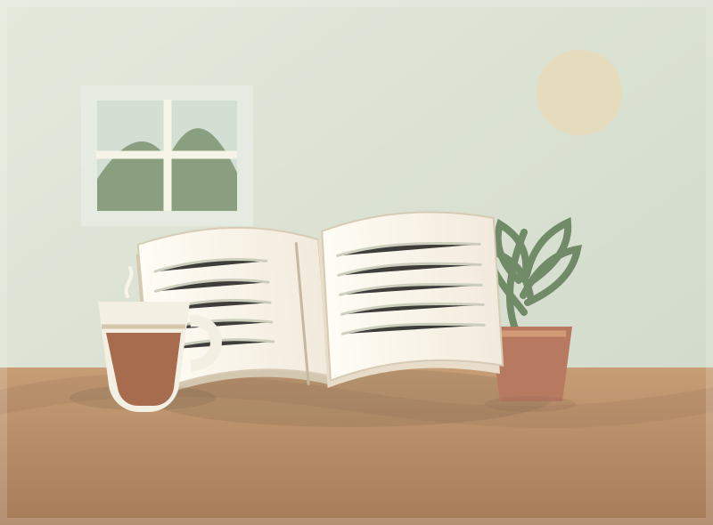

PERSONAL STORIES
A slower morning,
a better day.

For a while, my mornings felt like a race I had already started late. I would reach for my phone, scan a dozen messages, and somehow feel behind before the day had properly begun.
One Monday, I tried something different. I left my phone on the desk, made a warm drink, and sat by the window with my notebook. Nothing extraordinary happened. The light moved across the room, the neighborhood woke up, and I wrote down three things I wanted to make time for.
Making a little space
That small pause changed how the rest of the morning felt. I was still busy, but I was choosing what to pay attention to instead of letting every notification choose for me. I had a clearer idea of what mattered and a little more patience for everything else.
It isn't a perfect routine, and it doesn't need to be. Some mornings are still hurried. But even a few quiet minutes can be a gentle way to meet the day where it is.
“A good beginning doesn't have to be a big one.”
I'm learning that taking care of a day can start with one small decision: give yourself a moment before giving the world your attention.